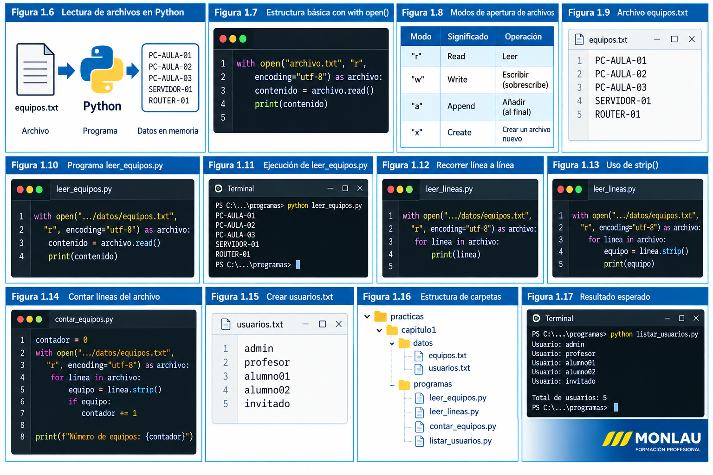

Gestión del sistema de archivos¶
1. Introducción¶
Una de las aplicaciones más importantes de Python en la administración de sistemas es la automatización de tareas relacionadas con archivos y directorios.
Un programa Python puede, por ejemplo:
- Leer información almacenada en un archivo.
- Crear automáticamente nuevos archivos.
- Modificar archivos existentes.
- Procesar archivos de configuración.
- Leer inventarios de equipos.
- Crear informes.
- Comprobar si un archivo o una carpeta existe.
- Crear, copiar, mover o eliminar archivos y directorios.
Estas operaciones permiten construir scripts de administración capaces de realizar automáticamente tareas que manualmente serían repetitivas.
Ejemplo
Imaginemos que administramos una red con 200 ordenadores.
Podemos guardar sus nombres y direcciones IP en un archivo y crear un programa Python que lea automáticamente esa información para realizar diferentes operaciones sobre los equipos.
2. Archivos y directorios¶
Antes de trabajar con archivos desde Python debemos distinguir dos conceptos básicos.
Archivo¶
Un archivo es una unidad de información almacenada en un dispositivo.
Algunos ejemplos son:
usuarios.txt
equipos.csv
configuracion.json
informe.txt
errores.log
La extensión suele indicar el tipo de información almacenada:
| Extensión | Uso habitual |
|---|---|
.txt |
Texto |
.csv |
Datos separados por campos |
.json |
Datos estructurados |
.log |
Registros de actividad |
.py |
Programa Python |
Directorio¶
Un directorio o carpeta permite organizar archivos y otros directorios.
Por ejemplo:
proyecto/
│
├── datos/
│ ├── equipos.csv
│ └── usuarios.txt
│
├── informes/
│ └── informe.txt
│
└── programa.py
En este ejemplo, nuestro programa programa.py podría leer información de datos/equipos.csv y generar posteriormente un informe dentro de informes.
3. Rutas de archivos¶
Para acceder a un archivo, Python necesita conocer su ruta.
Una ruta indica dónde se encuentra un archivo o directorio dentro del sistema de archivos.
En Windows podemos encontrar rutas como:
C:\Users\Jose\Documents\datos\equipos.csv
Podemos trabajar principalmente con dos tipos de rutas:
- Rutas absolutas
- Rutas relativas
Ruta absoluta¶
Una ruta absoluta especifica completamente la ubicación del archivo.
Por ejemplo:
C:\Users\Jose\Documents\Python\datos\equipos.csv
La ruta comienza desde una ubicación concreta del sistema.
El problema es que una ruta absoluta suele depender del ordenador en el que ejecutemos el programa.
Por ejemplo, este archivo:
C:\Users\Jose\Documents\Python\datos\equipos.csv
probablemente no exista en el ordenador de otro alumno.
Ruta relativa¶
Una ruta relativa indica la ubicación de un archivo tomando como referencia el directorio desde el que estamos trabajando.
Supongamos esta estructura:
proyecto/
│
├── datos/
│ └── equipos.csv
│
└── programa.py
Desde programa.py podemos referirnos al archivo simplemente como:
datos/equipos.csv
Esto hace que nuestros programas sean mucho más fáciles de trasladar entre diferentes ordenadores.
Recomendación
Siempre que sea posible utilizaremos rutas relativas en nuestros proyectos.
De esta manera podremos copiar el proyecto completo a otro ordenador sin tener que modificar las rutas utilizadas por nuestros programas.
4. El directorio de trabajo¶
Cuando ejecutamos un programa Python existe un directorio denominado directorio de trabajo actual.
Podemos averiguar cuál es utilizando el módulo os.
Crea un archivo llamado:
directorio_actual.py
Escribe:
import os
directorio = os.getcwd()
print("Directorio de trabajo actual:")
print(directorio)
Ejecuta el programa desde la terminal de VS Code:
python directorio_actual.py
Obtendremos una salida similar a:
Directorio de trabajo actual:
C:\Users\Jose\Documents\Proyectos\Python
La función:
os.getcwd()
significa Get Current Working Directory y devuelve el directorio de trabajo actual.
Importante
El directorio de trabajo es especialmente importante cuando utilizamos rutas relativas, ya que Python buscará los archivos tomando este directorio como referencia.
5. Nuestra primera práctica con archivos¶
Vamos a preparar una pequeña estructura que utilizaremos en los siguientes apartados.
Crea una carpeta llamada:
practicas
Dentro crea:
practicas/
│
└── capitulo1/
│
├── datos/
└── programas/
Dentro de datos crea manualmente el archivo:
equipos.txt
Introduce estas líneas:
PC-AULA-01
PC-AULA-02
PC-AULA-03
SERVIDOR-01
ROUTER-01
La estructura quedará:
practicas/
└── capitulo1/
│
├── datos/
│ └── equipos.txt
│
└── programas/
Todavía no vamos a leer el archivo desde Python.
En el siguiente apartado aprenderemos a abrirlo correctamente mediante:
with open(...)
y veremos por qué esta es una de las formas más adecuadas de trabajar con archivos desde Python.
Resumen¶
En esta primera parte hemos aprendido que:
- Python puede automatizar tareas relacionadas con archivos y directorios.
- Los archivos almacenan información.
- Los directorios permiten organizar archivos.
- Una ruta indica dónde se encuentra un archivo.
- Las rutas pueden ser absolutas o relativas.
- Las rutas relativas facilitan que nuestros programas funcionen en diferentes ordenadores.
- Python puede conocer el directorio de trabajo mediante
os.getcwd().
En el siguiente apartado comenzaremos a leer archivos de texto desde Python.
6. Lectura de archivos de texto¶
Una de las operaciones más habituales en un script de administración es leer información almacenada en un archivo.
Python permite abrir archivos mediante la función:
open()
La siguiente figura resume el proceso que seguiremos para abrir, leer y procesar archivos de texto desde Python.

Figura 1.6. Lectura y procesamiento de archivos de texto con Python.
Aunque podemos utilizar open() directamente, la forma recomendada de trabajar con archivos es mediante:
with open(...)
Esta estructura se encarga de cerrar correctamente el archivo cuando terminamos de utilizarlo.
7. Abrir un archivo con with open()¶
La estructura básica es:
with open("archivo.txt", "r", encoding="utf-8") as archivo:
contenido = archivo.read()
Vamos a analizar cada elemento.
open()¶
La función:
open()
abre el archivo indicado.
"r"¶
El segundo parámetro establece el modo de apertura.
"r"
significa read, es decir, abrir el archivo para lectura.
Algunos de los modos que utilizaremos durante el curso son:
| Modo | Significado | Operación |
|---|---|---|
r |
Read | Leer |
w |
Write | Escribir |
a |
Append | Añadir |
x |
Create | Crear un archivo nuevo |
Por ahora utilizaremos únicamente el modo r.
encoding="utf-8"¶
Con:
encoding="utf-8"
indicamos la codificación utilizada para interpretar el texto.
Esto es especialmente importante cuando nuestros archivos contienen caracteres como:
á é í ó ú
ñ
ç
Durante el curso utilizaremos normalmente UTF-8.
as archivo¶
La expresión:
as archivo
crea una variable que utilizaremos para trabajar con el archivo abierto.
Por tanto:
with open("equipos.txt", "r", encoding="utf-8") as archivo:
puede interpretarse como:
Abre
equipos.txten modo lectura utilizando UTF-8 y permite trabajar con él mediante la variablearchivo.
Uso de with
Utilizaremos habitualmente with open(...) para trabajar con archivos.
Al finalizar el bloque with, Python se encarga de cerrar el archivo automáticamente, incluso si durante su procesamiento se produce un error.
8. Leer todo el contenido de un archivo¶
En la primera parte del capítulo creamos:
practicas/
└── capitulo1/
├── datos/
│ └── equipos.txt
└── programas/
El archivo equipos.txt contiene:
PC-AULA-01
PC-AULA-02
PC-AULA-03
SERVIDOR-01
ROUTER-01
Vamos a crear nuestro primer programa de lectura.
Dentro de:
practicas/capitulo1/programas/
crea:
leer_equipos.py
Escribe:
with open("../datos/equipos.txt", "r", encoding="utf-8") as archivo:
contenido = archivo.read()
print(contenido)
La instrucción:
archivo.read()
lee todo el contenido del archivo y lo devuelve como una cadena de texto.
Guardamos esa cadena en:
contenido
y posteriormente la mostramos:
print(contenido)
9. Ejecutar el programa¶
Para evitar problemas con las rutas relativas, sitúate primero desde la terminal en la carpeta de programas:
cd practicas\capitulo1\programas
Después ejecuta:
python leer_equipos.py
El resultado debería ser:
PC-AULA-01
PC-AULA-02
PC-AULA-03
SERVIDOR-01
ROUTER-01
Nuestro primer programa ya ha conseguido:
equipos.txt
│
│ open()
▼
Python
│
│ read()
▼
contenido
│
│ print()
▼
Terminal
10. Leer el archivo línea a línea¶
En muchas tareas de administración no nos interesa tratar todo el archivo como un único bloque.
Por ejemplo, si equipos.txt contiene un equipo por línea, normalmente querremos procesar cada equipo individualmente.
Podemos recorrer directamente el archivo mediante un bucle for.
Crea:
leer_lineas.py
dentro de:
practicas/capitulo1/programas/
Escribe:
with open("../datos/equipos.txt", "r", encoding="utf-8") as archivo:
for linea in archivo:
print(linea)
Ejecuta:
python leer_lineas.py
Probablemente observarás un pequeño problema: aparecerán líneas en blanco entre los equipos.
Esto ocurre porque cada línea del archivo termina con un salto de línea y print() añade otro salto.
Podemos solucionarlo mediante:
strip()
Modifica el programa:
with open("../datos/equipos.txt", "r", encoding="utf-8") as archivo:
for linea in archivo:
equipo = linea.strip()
print(equipo)
Ahora la salida será:
PC-AULA-01
PC-AULA-02
PC-AULA-03
SERVIDOR-01
ROUTER-01
La función:
strip()
elimina espacios y caracteres de salto de línea situados al principio y al final de una cadena.
11. Procesar la información¶
La ventaja de leer línea a línea es que podemos realizar operaciones diferentes con cada elemento.
Por ejemplo:
with open("../datos/equipos.txt", "r", encoding="utf-8") as archivo:
for linea in archivo:
equipo = linea.strip()
print(f"Procesando equipo: {equipo}")
Resultado:
Procesando equipo: PC-AULA-01
Procesando equipo: PC-AULA-02
Procesando equipo: PC-AULA-03
Procesando equipo: SERVIDOR-01
Procesando equipo: ROUTER-01
Esto empieza a parecerse a un script real de administración.
Más adelante podremos sustituir:
print(f"Procesando equipo: {equipo}")
por operaciones como:
comprobar conectividad
↓
comprobar puertos
↓
obtener información
↓
generar informe
Precisamente estas técnicas se reutilizarán posteriormente en el proyecto final del curso.
12. Contar los equipos de un archivo¶
Vamos a realizar una pequeña práctica.
Crea:
contar_equipos.py
Escribe:
contador = 0
with open("../datos/equipos.txt", "r", encoding="utf-8") as archivo:
for linea in archivo:
equipo = linea.strip()
if equipo:
contador += 1
print(f"Número de equipos: {contador}")
Ejecuta:
python contar_equipos.py
Resultado:
Número de equipos: 5
Observa:
if equipo:
Esta condición evita contar una línea si está vacía.
Prueba
Añade varias líneas vacías dentro de equipos.txt y vuelve a ejecutar el programa.
El resultado debe continuar siendo:
text
Número de equipos: 5
13. Práctica propuesta¶
Crea un archivo:
usuarios.txt
dentro de:
practicas/capitulo1/datos/
Introduce al menos cinco nombres de usuario:
admin
profesor
alumno01
alumno02
invitado
Crea posteriormente:
listar_usuarios.py
El programa debe:
- Abrir
usuarios.txt. - Leerlo línea a línea.
- Eliminar los saltos de línea.
- Mostrar cada usuario precedido por el texto
Usuario:. - Contar el número total de usuarios.
El resultado deberá tener un aspecto similar a:
Usuario: admin
Usuario: profesor
Usuario: alumno01
Usuario: alumno02
Usuario: invitado
Total de usuarios: 5
Intenta resolverlo primero
Antes de consultar una posible solución, intenta construir el programa utilizando lo que hemos aprendido:
with open()- modo
r forstrip()- una variable contador
Resumen¶
En esta parte hemos aprendido a:
- Abrir archivos mediante
with open(). - Utilizar el modo de lectura
r. - Trabajar con archivos codificados en UTF-8.
- Leer un archivo completo mediante
read(). - Recorrer un archivo línea a línea.
- Eliminar saltos de línea mediante
strip(). - Procesar individualmente los datos almacenados.
- Contar elementos contenidos en un archivo.
En el siguiente apartado aprenderemos a realizar la operación contraria: crear y escribir archivos de texto desde Python.
14. Escritura de archivos de texto¶
Hasta ahora hemos utilizado Python para leer información almacenada en archivos.
En muchas tareas de administración necesitaremos realizar la operación contraria: generar información y guardarla en un archivo.
Por ejemplo, un script puede:
- Crear un informe con el estado de varios equipos.
- Guardar los resultados de una comprobación.
- Generar automáticamente un archivo de configuración.
- Registrar información obtenida durante la ejecución.
- Crear un inventario de dispositivos.
Para escribir información utilizaremos nuevamente:
with open(...)
pero cambiaremos el modo de apertura del archivo.
15. El modo de escritura w¶
Para escribir en un archivo utilizamos:
"w"
La letra w procede de write.
La estructura básica es:
with open("archivo.txt", "w", encoding="utf-8") as archivo:
archivo.write("Texto que queremos guardar")
La función:
archivo.write()
escribe información dentro del archivo.
Cuidado con el modo w
Si el archivo no existe, Python lo crea automáticamente.
Si el archivo ya existe, el modo w elimina su contenido anterior antes de escribir la nueva información.
Por tanto, debemos utilizar este modo con cuidado.
16. Crear nuestro primer archivo desde Python¶
Vamos a crear automáticamente un pequeño informe.
Dentro de:
practicas/capitulo1/programas/
crea:
crear_informe.py
Escribe:
with open("../datos/informe.txt", "w", encoding="utf-8") as archivo:
archivo.write("INFORME DE EQUIPOS\n")
archivo.write("===================\n")
archivo.write("PC-AULA-01\n")
archivo.write("PC-AULA-02\n")
archivo.write("SERVIDOR-01\n")
print("Informe creado correctamente.")
Ejecuta:
python crear_informe.py
Obtendrás:
Informe creado correctamente.
Ahora observa la carpeta:
practicas/capitulo1/datos/
Python habrá creado automáticamente:
informe.txt
Su contenido será:
INFORME DE EQUIPOS
===================
PC-AULA-01
PC-AULA-02
SERVIDOR-01
17. El carácter \n¶
En el programa anterior aparece varias veces:
\n
Este carácter representa un salto de línea.
Por ejemplo:
archivo.write("PC-AULA-01\n")
archivo.write("PC-AULA-02\n")
produce:
PC-AULA-01
PC-AULA-02
Si no utilizáramos \n:
archivo.write("PC-AULA-01")
archivo.write("PC-AULA-02")
obtendríamos:
PC-AULA-01PC-AULA-02
Recuerda
write() no añade automáticamente un salto de línea.
Si queremos escribir diferentes líneas debemos incluir \n cuando sea necesario.
18. Escribir información almacenada en variables¶
Normalmente los datos que guardaremos no estarán escritos directamente dentro del programa.
Procederán de variables, cálculos o resultados obtenidos durante la ejecución.
Por ejemplo:
equipo = "SERVIDOR-01"
direccion_ip = "192.168.1.10"
estado = "ACTIVO"
with open("../datos/estado_equipo.txt", "w", encoding="utf-8") as archivo:
archivo.write(f"Equipo: {equipo}\n")
archivo.write(f"Dirección IP: {direccion_ip}\n")
archivo.write(f"Estado: {estado}\n")
print("Información guardada correctamente.")
El archivo generado contendrá:
Equipo: SERVIDOR-01
Dirección IP: 192.168.1.10
Estado: ACTIVO
Aquí estamos combinando la escritura de archivos con las f-strings de Python:
f"Equipo: {equipo}\n"
Esto nos permite incorporar el contenido de variables dentro del texto que escribimos.
19. Escribir varios elementos mediante un bucle¶
También podemos generar archivos utilizando una colección de datos.
Por ejemplo:
equipos = [
"PC-AULA-01",
"PC-AULA-02",
"PC-AULA-03",
"SERVIDOR-01",
"ROUTER-01"
]
with open("../datos/inventario.txt", "w", encoding="utf-8") as archivo:
for equipo in equipos:
archivo.write(equipo + "\n")
print("Inventario generado correctamente.")
El bucle:
for equipo in equipos:
recorre los elementos de la lista.
En cada iteración:
archivo.write(equipo + "\n")
escribe un equipo y añade un salto de línea.
El resultado será:
PC-AULA-01
PC-AULA-02
PC-AULA-03
SERVIDOR-01
ROUTER-01
De esta forma podemos generar automáticamente archivos aunque contengan cientos de elementos.
20. Añadir información con el modo a¶
Existe una diferencia importante entre sobrescribir un archivo y añadir información a un archivo existente.
El modo:
"w"
reemplaza el contenido.
Para conservar el contenido existente y añadir nueva información al final utilizamos:
"a"
La letra a procede de append.
Por ejemplo:
with open("../datos/inventario.txt", "a", encoding="utf-8") as archivo:
archivo.write("SWITCH-01\n")
print("Equipo añadido al inventario.")
Si inicialmente teníamos:
PC-AULA-01
PC-AULA-02
PC-AULA-03
SERVIDOR-01
ROUTER-01
después de ejecutar el programa tendremos:
PC-AULA-01
PC-AULA-02
PC-AULA-03
SERVIDOR-01
ROUTER-01
SWITCH-01
El contenido anterior no se ha eliminado.
21. Diferencia entre w y a¶
Es importante comprender perfectamente estos dos modos.
| Modo | Si el archivo no existe | Si el archivo existe |
|---|---|---|
w |
Lo crea | Borra el contenido y escribe de nuevo |
a |
Lo crea | Conserva el contenido y añade al final |
Podemos representarlo así:
MODO w
archivo existente
↓
borra contenido
↓
escribe contenido nuevo
MODO a
archivo existente
↓
conserva contenido
↓
añade información al final
Error habitual
Utilizar w cuando queríamos utilizar a puede provocar la pérdida del contenido anterior del archivo.
Antes de escribir sobre un archivo existente debemos decidir si queremos reemplazar o añadir información.
22. Leer un archivo y generar otro¶
Ahora vamos a combinar las dos operaciones que ya conocemos:
LEER → PROCESAR → ESCRIBIR
Partiremos de:
equipos.txt
y generaremos automáticamente:
informe_equipos.txt
Crea:
generar_informe.py
dentro de:
practicas/capitulo1/programas/
Escribe:
contador = 0
with open("../datos/equipos.txt", "r", encoding="utf-8") as origen:
with open("../datos/informe_equipos.txt", "w", encoding="utf-8") as destino:
destino.write("INFORME DE INVENTARIO\n")
destino.write("=====================\n")
for linea in origen:
equipo = linea.strip()
if equipo:
contador += 1
destino.write(f"{contador}. {equipo}\n")
destino.write("=====================\n")
destino.write(f"Total de equipos: {contador}\n")
print("Informe generado correctamente.")
Ejecuta:
python generar_informe.py
Python leerá:
equipos.txt
procesará sus datos y generará:
informe_equipos.txt
con un contenido similar a:
INFORME DE INVENTARIO
=====================
1. PC-AULA-01
2. PC-AULA-02
3. PC-AULA-03
4. SERVIDOR-01
5. ROUTER-01
=====================
Total de equipos: 5
Este patrón será muy importante durante el curso:
ARCHIVO DE ENTRADA
│
▼
Python
│
├── Lee
├── Procesa
└── Genera resultados
│
▼
ARCHIVO DE SALIDA
23. Práctica propuesta: registro de incidencias¶
Vamos a crear un programa sencillo que permita registrar incidencias de equipos.
Crea:
registrar_incidencia.py
El programa debe solicitar:
Nombre del equipo:
Descripción de la incidencia:
Por ejemplo:
Nombre del equipo: PC-AULA-03
Descripción de la incidencia: No tiene conexión de red
Después debe guardar la incidencia en:
incidencias.txt
El programa debe utilizar el modo:
"a"
para que las incidencias anteriores no se pierdan.
El archivo podría terminar conteniendo:
PC-AULA-03 - No tiene conexión de red
PC-AULA-07 - No inicia Windows
PC-AULA-12 - Teclado no funciona
Objetivo
Cada vez que ejecutemos el programa debemos poder introducir una nueva incidencia sin borrar las anteriores.
Pistas
Necesitarás utilizar:
input()- dos variables
with open()- modo
a write()- una f-string
\n
24. Comprobar lo aprendido¶
Al finalizar esta parte debemos distinguir claramente las tres operaciones principales:
| Operación | Modo | Ejemplo |
|---|---|---|
| Leer | r |
open("datos.txt", "r") |
| Escribir/reemplazar | w |
open("datos.txt", "w") |
| Añadir | a |
open("datos.txt", "a") |
El patrón general será:
with open("archivo.txt", "modo", encoding="utf-8") as archivo:
# operaciones con el archivo
Resumen¶
En esta parte hemos aprendido a:
- Crear archivos desde Python.
- Escribir información mediante
write(). - Utilizar
\npara generar saltos de línea. - Escribir el contenido de variables.
- Generar archivos mediante bucles.
- Utilizar el modo
wpara escribir o reemplazar contenido. - Utilizar el modo
apara añadir información. - Leer un archivo y generar otro a partir de sus datos.
- Construir pequeños scripts para registrar información.
En el siguiente apartado comenzaremos a trabajar con archivos CSV, un formato especialmente útil para almacenar inventarios y configuraciones.
25. Archivos CSV¶
Hasta ahora hemos utilizado archivos de texto en los que normalmente almacenábamos un dato en cada línea.
Por ejemplo:
PC-AULA-01
PC-AULA-02
SERVIDOR-01
Este sistema funciona bien cuando cada elemento contiene un único dato, pero en administración de sistemas normalmente necesitaremos almacenar varios datos relacionados con cada equipo.
Por ejemplo:
Nombre del equipo
Dirección IP
Sistema operativo
Ubicación
Estado
Para almacenar este tipo de información podemos utilizar archivos CSV.
CSV significa:
Comma-Separated Values
o valores separados por comas.
Un archivo CSV es un archivo de texto en el que cada línea representa normalmente un registro y sus diferentes campos están separados mediante un carácter delimitador.
Por ejemplo:
nombre,ip,sistema,ubicacion
PC-AULA-01,192.168.1.101,Windows 11,Aula 1
PC-AULA-02,192.168.1.102,Windows 11,Aula 1
SERVIDOR-01,192.168.1.10,Ubuntu Server,CPD
En este ejemplo tenemos cuatro campos:
| Campo | Contenido |
|---|---|
nombre |
Nombre del equipo |
ip |
Dirección IP |
sistema |
Sistema operativo |
ubicacion |
Ubicación física |
La primera línea:
nombre,ip,sistema,ubicacion
contiene los nombres de las columnas.
Las siguientes líneas contienen los datos.
CSV es un archivo de texto
Aunque normalmente abrimos los archivos CSV mediante aplicaciones como Excel o LibreOffice Calc, un archivo .csv es realmente un archivo de texto.
Podemos abrirlo también con VS Code o cualquier editor de texto.
26. Crear nuestro inventario CSV¶
Vamos a utilizar CSV para crear un pequeño inventario de equipos.
Dentro de:
practicas/capitulo1/datos/
crea:
inventario.csv
Introduce:
nombre,ip,sistema,ubicacion
PC-AULA-01,192.168.1.101,Windows 11,Aula 1
PC-AULA-02,192.168.1.102,Windows 11,Aula 1
PC-AULA-03,192.168.1.103,Windows 11,Aula 1
SERVIDOR-01,192.168.1.10,Ubuntu Server,CPD
ROUTER-01,192.168.1.1,Cisco IOS,Armario comunicaciones
Guarda el archivo.
Nuestra estructura contiene ahora:
practicas/
└── capitulo1/
├── datos/
│ ├── equipos.txt
│ ├── inventario.csv
│ └── ...
│
└── programas/
27. El módulo csv¶
Python incorpora un módulo específico para trabajar con archivos CSV:
csv
No necesitamos instalar ninguna librería adicional.
Para utilizarlo escribimos:
import csv
La instrucción import permite incorporar a nuestro programa funcionalidades proporcionadas por otros módulos de Python.
Biblioteca estándar
El módulo csv forma parte de la biblioteca estándar de Python.
Por tanto, podemos utilizarlo directamente sin ejecutar pip install.
28. Leer un archivo CSV¶
Dentro de:
practicas/capitulo1/programas/
crea:
leer_csv.py
Escribe:
import csv
with open("../datos/inventario.csv", "r", encoding="utf-8") as archivo:
lector = csv.reader(archivo)
for fila in lector:
print(fila)
Ejecuta:
python leer_csv.py
Obtendremos una salida similar a:
['nombre', 'ip', 'sistema', 'ubicacion']
['PC-AULA-01', '192.168.1.101', 'Windows 11', 'Aula 1']
['PC-AULA-02', '192.168.1.102', 'Windows 11', 'Aula 1']
['PC-AULA-03', '192.168.1.103', 'Windows 11', 'Aula 1']
['SERVIDOR-01', '192.168.1.10', 'Ubuntu Server', 'CPD']
['ROUTER-01', '192.168.1.1', 'Cisco IOS', 'Armario comunicaciones']
La instrucción:
lector = csv.reader(archivo)
crea un objeto que interpreta cada línea del archivo CSV.
Posteriormente:
for fila in lector:
recorre cada registro.
Cada fila se convierte en una lista de Python.
Por ejemplo:
['PC-AULA-01', '192.168.1.101', 'Windows 11', 'Aula 1']
29. Acceder a los campos mediante su posición¶
Como cada fila es una lista, podemos acceder a sus elementos mediante índices.
En Python, el primer elemento ocupa la posición:
0
Por tanto:
fila[0] → nombre
fila[1] → IP
fila[2] → sistema
fila[3] → ubicación
Podemos modificar nuestro programa:
import csv
with open("../datos/inventario.csv", "r", encoding="utf-8") as archivo:
lector = csv.reader(archivo)
for fila in lector:
print(f"Equipo: {fila[0]}")
print(f"IP: {fila[1]}")
print(f"Sistema: {fila[2]}")
print(f"Ubicación: {fila[3]}")
print("-------------------------")
El problema es que también procesaremos la cabecera:
Equipo: nombre
IP: ip
Sistema: sistema
Ubicación: ubicacion
Podemos evitarlo utilizando:
next(lector)
El programa quedaría:
import csv
with open("../datos/inventario.csv", "r", encoding="utf-8") as archivo:
lector = csv.reader(archivo)
next(lector)
for fila in lector:
print(f"Equipo: {fila[0]}")
print(f"IP: {fila[1]}")
print(f"Sistema: {fila[2]}")
print(f"Ubicación: {fila[3]}")
print("-------------------------")
Ahora next(lector) consume la primera fila antes de comenzar el bucle.
30. Leer CSV mediante DictReader¶
Existe una forma más cómoda de trabajar con archivos CSV que contienen una cabecera.
Podemos utilizar:
csv.DictReader()
DictReader utiliza los nombres de la primera fila como claves.
Crea:
leer_inventario.py
Escribe:
import csv
with open("../datos/inventario.csv", "r", encoding="utf-8") as archivo:
lector = csv.DictReader(archivo)
for equipo in lector:
print(f"Nombre: {equipo['nombre']}")
print(f"IP: {equipo['ip']}")
print(f"Sistema: {equipo['sistema']}")
print(f"Ubicación: {equipo['ubicacion']}")
print("-------------------------")
Ejecuta:
python leer_inventario.py
Obtendremos:
Nombre: PC-AULA-01
IP: 192.168.1.101
Sistema: Windows 11
Ubicación: Aula 1
-------------------------
Nombre: PC-AULA-02
IP: 192.168.1.102
Sistema: Windows 11
Ubicación: Aula 1
-------------------------
...
Ahora ya no necesitamos recordar:
fila[0]
fila[1]
fila[2]
fila[3]
Podemos utilizar directamente:
equipo["nombre"]
equipo["ip"]
equipo["sistema"]
equipo["ubicacion"]
Esto hace que el programa sea mucho más fácil de leer.
Recomendación
Cuando un archivo CSV tenga una fila de cabecera, normalmente utilizaremos csv.DictReader().
El código resulta más claro porque podemos acceder a los datos utilizando el nombre de cada campo.
31. Buscar información en un CSV¶
Ahora podemos utilizar los datos del inventario para realizar búsquedas.
Por ejemplo, podemos mostrar únicamente los equipos que utilizan Windows 11:
import csv
with open("../datos/inventario.csv", "r", encoding="utf-8") as archivo:
lector = csv.DictReader(archivo)
for equipo in lector:
if equipo["sistema"] == "Windows 11":
print(f"{equipo['nombre']} - {equipo['ip']}")
Resultado:
PC-AULA-01 - 192.168.1.101
PC-AULA-02 - 192.168.1.102
PC-AULA-03 - 192.168.1.103
Estamos combinando:
CSV
↓
DictReader
↓
for
↓
if
↓
resultado
Este patrón será muy útil posteriormente para trabajar con inventarios reales.
32. Buscar un equipo introducido por el usuario¶
Vamos a hacer el programa un poco más interactivo.
Crea:
buscar_equipo.py
Escribe:
import csv
busqueda = input("Introduce el nombre del equipo: ")
encontrado = False
with open("../datos/inventario.csv", "r", encoding="utf-8") as archivo:
lector = csv.DictReader(archivo)
for equipo in lector:
if equipo["nombre"] == busqueda:
print()
print("Equipo encontrado")
print("-----------------")
print(f"Nombre: {equipo['nombre']}")
print(f"IP: {equipo['ip']}")
print(f"Sistema: {equipo['sistema']}")
print(f"Ubicación: {equipo['ubicacion']}")
encontrado = True
break
if not encontrado:
print("El equipo no existe en el inventario.")
Ejemplo:
Introduce el nombre del equipo: SERVIDOR-01
Equipo encontrado
-----------------
Nombre: SERVIDOR-01
IP: 192.168.1.10
Sistema: Ubuntu Server
Ubicación: CPD
La variable:
encontrado = False
nos permite saber si hemos localizado el equipo.
Cuando encontramos una coincidencia:
encontrado = True
y:
break
finaliza el bucle porque ya no necesitamos seguir buscando.
33. Escribir archivos CSV¶
También podemos crear archivos CSV directamente desde Python.
Para ello utilizamos:
csv.writer()
Crea:
crear_csv.py
Escribe:
import csv
with open("../datos/nuevo_inventario.csv", "w", encoding="utf-8", newline="") as archivo:
escritor = csv.writer(archivo)
escritor.writerow(["nombre", "ip", "sistema", "ubicacion"])
escritor.writerow(["PC-AULA-01", "192.168.1.101", "Windows 11", "Aula 1"])
escritor.writerow(["SERVIDOR-01", "192.168.1.10", "Ubuntu Server", "CPD"])
print("Archivo CSV creado correctamente.")
Observa que aparece un nuevo parámetro:
newline=""
Al trabajar con el módulo csv es recomendable abrir el archivo de esta forma para que sea el propio módulo csv quien gestione correctamente los finales de línea.
La función:
writerow()
escribe una fila completa.
Después de ejecutar:
python crear_csv.py
se creará:
nuevo_inventario.csv
34. Crear un CSV a partir de una lista¶
En un programa real los datos normalmente estarán almacenados en variables o estructuras de datos.
Por ejemplo:
import csv
equipos = [
["PC-AULA-01", "192.168.1.101", "Windows 11", "Aula 1"],
["PC-AULA-02", "192.168.1.102", "Windows 11", "Aula 1"],
["SERVIDOR-01", "192.168.1.10", "Ubuntu Server", "CPD"]
]
with open("../datos/equipos_exportados.csv", "w", encoding="utf-8", newline="") as archivo:
escritor = csv.writer(archivo)
escritor.writerow(["nombre", "ip", "sistema", "ubicacion"])
for equipo in equipos:
escritor.writerow(equipo)
print("Inventario exportado correctamente.")
Aquí tenemos claramente un proceso de:
DATOS EN PYTHON
↓
csv.writer
↓
ARCHIVO CSV
Este proceso se denomina habitualmente exportación de datos.
35. Diferentes delimitadores¶
Aunque CSV significa valores separados por comas, podemos encontrar archivos que utilizan otros caracteres como separador.
En España es bastante habitual encontrar:
nombre;ip;sistema;ubicacion
en lugar de:
nombre,ip,sistema,ubicacion
En ese caso debemos indicárselo a Python.
Para leer:
lector = csv.DictReader(archivo, delimiter=";")
Para escribir:
escritor = csv.writer(archivo, delimiter=";")
Importante
Antes de procesar un archivo CSV debemos comprobar qué carácter utiliza como delimitador.
Los más habituales son la coma , y el punto y coma ;.
36. Práctica propuesta: inventario de red¶
Vamos a crear un pequeño programa para generar un inventario.
El programa debe solicitar al usuario:
Nombre del equipo:
Dirección IP:
Sistema operativo:
Ubicación:
Los datos deben añadirse a:
inventario_alumnos.csv
Cada vez que ejecutemos el programa debe añadirse un nuevo equipo sin eliminar los anteriores.
El archivo deberá tener esta estructura:
nombre,ip,sistema,ubicacion
PC01,192.168.1.20,Windows 11,Aula 2
PC02,192.168.1.21,Ubuntu,Aula 2
Pistas
Para resolver la práctica necesitarás combinar:
import csvinput()- modo
a csv.writer()writerow()newline=""
Ampliación
Como mejora, haz que el programa compruebe si el archivo existe para escribir la cabecera solamente cuando se crea por primera vez.
Más adelante aprenderemos a realizar esta comprobación de forma sencilla mediante pathlib.
37. CSV y administración de sistemas¶
Los archivos CSV son especialmente útiles en administración porque permiten intercambiar información entre diferentes herramientas.
Por ejemplo:
Inventario de equipos
│
▼
inventario.csv
│
▼
Python
│
├── filtrar
├── comprobar
├── modificar
└── generar informes
Más adelante reutilizaremos estos conocimientos para que nuestros scripts puedan leer automáticamente listados de equipos y realizar operaciones sobre ellos.
De hecho, en el proyecto final del curso utilizaremos precisamente un archivo CSV como origen del listado de equipos.
Resumen¶
En esta parte hemos aprendido a:
- Comprender la estructura de un archivo CSV.
- Utilizar el módulo
csv. - Leer archivos mediante
csv.reader(). - Saltar la cabecera mediante
next(). - Leer registros mediante
csv.DictReader(). - Acceder a los datos mediante nombres de campos.
- Buscar y filtrar información.
- Crear archivos mediante
csv.writer(). - Escribir filas mediante
writerow(). - Exportar datos de Python a CSV.
- Trabajar con diferentes delimitadores.
En el siguiente apartado aprenderemos a trabajar con rutas, archivos y directorios mediante os y pathlib.
38. Trabajar con rutas y directorios¶
Hasta ahora hemos utilizado rutas como:
"../datos/equipos.txt"
Esta ruta funciona siempre que ejecutemos el programa desde el directorio esperado.
Sin embargo, los scripts de administración deben ser lo más independientes posible del lugar desde el que se ejecuten.
Python proporciona diferentes herramientas para trabajar con archivos, rutas y directorios.
En este apartado utilizaremos principalmente:
os
y:
pathlib
Ambos forman parte de la biblioteca estándar de Python, por lo que no necesitamos instalar ningún paquete adicional.
39. El módulo os¶
El módulo os proporciona funciones para interactuar con el sistema operativo.
Para utilizarlo:
import os
Una de las primeras funciones que vimos fue:
os.getcwd()
que permite conocer el directorio de trabajo actual.
Crea:
comprobar_directorio.py
dentro de:
practicas/capitulo1/programas/
Escribe:
import os
directorio = os.getcwd()
print("Directorio de trabajo actual:")
print(directorio)
Ejecuta:
python comprobar_directorio.py
Obtendrás una ruta correspondiente al directorio desde el que estás ejecutando el programa.
40. Listar el contenido de un directorio¶
Podemos conocer los archivos y carpetas existentes mediante:
os.listdir()
Por ejemplo:
import os
elementos = os.listdir("../datos")
for elemento in elementos:
print(elemento)
La salida dependerá de los archivos que hayamos creado durante las prácticas:
equipos.txt
usuarios.txt
informe.txt
inventario.txt
inventario.csv
nuevo_inventario.csv
La función:
os.listdir()
devuelve una lista con los elementos contenidos en un directorio.
Prueba
Añade un nuevo archivo dentro de la carpeta datos y vuelve a ejecutar el programa.
El nuevo archivo deberá aparecer automáticamente en el listado.
41. Comprobar si existe un archivo¶
Antes de intentar abrir un archivo puede ser conveniente comprobar si realmente existe.
Podemos hacerlo mediante:
os.path.exists()
Por ejemplo:
import os
ruta = "../datos/equipos.txt"
if os.path.exists(ruta):
print("El archivo existe.")
else:
print("El archivo no existe.")
Prueba posteriormente:
ruta = "../datos/no_existe.txt"
Ahora obtendrás:
El archivo no existe.
Esta comprobación puede evitar que nuestro programa intente trabajar con un archivo inexistente.
42. Diferenciar archivos y directorios¶
También podemos comprobar qué tipo de elemento tenemos.
Para saber si es un archivo:
os.path.isfile(ruta)
Para saber si es un directorio:
os.path.isdir(ruta)
Por ejemplo:
import os
ruta = "../datos"
if os.path.isdir(ruta):
print("Es un directorio.")
if os.path.isfile(ruta):
print("Es un archivo.")
Resultado:
Es un directorio.
Podemos probar después:
ruta = "../datos/equipos.txt"
y obtendremos:
Es un archivo.
43. Crear directorios¶
Python también puede crear carpetas automáticamente.
Utilizamos:
os.mkdir()
Por ejemplo:
import os
os.mkdir("../datos/informes")
print("Directorio creado.")
Se creará:
datos/
└── informes/
Directorio existente
os.mkdir() produce un error si intentamos crear un directorio que ya existe.
Podemos evitarlo comprobando primero:
import os
ruta = "../datos/informes"
if not os.path.exists(ruta):
os.mkdir(ruta)
print("Directorio creado.")
else:
print("El directorio ya existe.")
44. Crear varios niveles de directorios¶
Supongamos que queremos crear:
informes/
└── 2026/
└── septiembre/
Para crear toda la estructura podemos utilizar:
os.makedirs()
Por ejemplo:
import os
ruta = "../datos/informes/2026/septiembre"
os.makedirs(ruta, exist_ok=True)
print("Estructura de directorios preparada.")
El parámetro:
exist_ok=True
indica que no queremos obtener un error si el directorio ya existe.
Esta opción resulta muy útil en scripts que deben asegurarse de que determinadas carpetas estén disponibles antes de generar archivos.
45. Construir rutas con os.path.join()¶
Hasta ahora hemos escrito rutas directamente:
"../datos/equipos.txt"
También podemos construirlas utilizando:
os.path.join()
Por ejemplo:
import os
carpeta = "../datos"
archivo = "equipos.txt"
ruta = os.path.join(carpeta, archivo)
print(ruta)
En Windows obtendremos una ruta similar a:
../datos\equipos.txt
La ventaja es que os.path.join() utiliza el separador adecuado para el sistema operativo.
Podemos utilizar la ruta resultante directamente:
import os
ruta = os.path.join("../datos", "equipos.txt")
with open(ruta, "r", encoding="utf-8") as archivo:
print(archivo.read())
46. Introducción a pathlib¶
Aunque os continúa siendo muy utilizado, Python dispone de una forma moderna y cómoda de trabajar con rutas:
pathlib
Importaremos:
from pathlib import Path
La clase:
Path
representa una ruta del sistema de archivos.
Por ejemplo:
from pathlib import Path
ruta = Path("../datos/equipos.txt")
print(ruta)
Una de las ventajas de pathlib es que podemos tratar las rutas como objetos y realizar operaciones directamente sobre ellas.
47. Construir rutas con Path¶
Podemos construir una ruta utilizando el operador /.
Por ejemplo:
from pathlib import Path
carpeta = Path("../datos")
ruta = carpeta / "equipos.txt"
print(ruta)
Esto resulta especialmente legible:
carpeta / "equipos.txt"
en lugar de concatenar manualmente cadenas.
Recomendación del curso
A partir de este punto utilizaremos preferentemente pathlib para construir y manipular rutas.
os sigue siendo importante y debemos conocerlo, pero Path permite escribir código muy claro y fácil de mantener.
48. Comprobar si una ruta existe con pathlib¶
Con un objeto Path podemos utilizar:
exists()
Por ejemplo:
from pathlib import Path
ruta = Path("../datos/equipos.txt")
if ruta.exists():
print("El archivo existe.")
else:
print("El archivo no existe.")
También disponemos de:
ruta.is_file()
para comprobar si es un archivo y:
ruta.is_dir()
para comprobar si es un directorio.
Ejemplo:
from pathlib import Path
ruta = Path("../datos")
if ruta.exists():
print("La ruta existe.")
if ruta.is_dir():
print("Es un directorio.")
if ruta.is_file():
print("Es un archivo.")
49. Crear directorios con pathlib¶
Podemos crear un directorio mediante:
mkdir()
Por ejemplo:
from pathlib import Path
ruta = Path("../datos/copias")
ruta.mkdir(exist_ok=True)
print("Directorio preparado.")
Para crear varios niveles:
from pathlib import Path
ruta = Path("../datos/informes/2026/septiembre")
ruta.mkdir(parents=True, exist_ok=True)
print("Estructura preparada.")
Aquí:
parents=True
permite crear los directorios superiores que sean necesarios.
Y:
exist_ok=True
evita un error si la carpeta ya existe.
50. Listar archivos con pathlib¶
También podemos recorrer el contenido de una carpeta.
Por ejemplo:
from pathlib import Path
carpeta = Path("../datos")
for elemento in carpeta.iterdir():
print(elemento.name)
La propiedad:
elemento.name
devuelve únicamente el nombre del archivo o directorio.
Podemos mostrar solamente los archivos:
from pathlib import Path
carpeta = Path("../datos")
for elemento in carpeta.iterdir():
if elemento.is_file():
print(elemento.name)
51. Buscar archivos por extensión¶
Una operación muy habitual consiste en localizar archivos de un determinado tipo.
Con pathlib podemos utilizar:
glob()
Por ejemplo, para localizar todos los CSV:
from pathlib import Path
carpeta = Path("../datos")
for archivo in carpeta.glob("*.csv"):
print(archivo.name)
Podríamos obtener:
inventario.csv
nuevo_inventario.csv
equipos_exportados.csv
inventario_alumnos.csv
El patrón:
*.csv
significa:
Cualquier nombre de archivo cuya extensión sea
.csv.
También podríamos buscar:
carpeta.glob("*.txt")
para localizar únicamente archivos de texto.
52. El problema del directorio de ejecución¶
Hasta ahora nuestros programas contienen rutas como:
Path("../datos")
Esto funciona porque estamos ejecutando los programas desde:
practicas/capitulo1/programas/
Pero observa qué ocurre si ejecutamos el programa desde otro directorio.
Una ruta relativa depende del directorio de trabajo actual, no necesariamente del lugar donde está almacenado el archivo .py.
Esto puede provocar errores del tipo:
FileNotFoundError
en programas que aparentemente tienen una ruta correcta.
Para crear scripts más robustos podemos obtener la ubicación del propio programa.
53. Obtener la carpeta del programa¶
Python proporciona la variable especial:
__file__
que contiene la ubicación del archivo Python que se está ejecutando.
Podemos combinarla con Path:
from pathlib import Path
programa = Path(__file__)
print(programa)
Pero normalmente nos interesa obtener su directorio:
from pathlib import Path
directorio_programa = Path(__file__).parent
print(directorio_programa)
Podemos además obtener una ruta absoluta:
from pathlib import Path
directorio_programa = Path(__file__).resolve().parent
print(directorio_programa)
Esta técnica será muy útil para nuestros scripts.
54. Construir una ruta robusta¶
Ahora podemos mejorar los programas anteriores.
Tenemos:
capitulo1/
├── datos/
│ └── equipos.txt
└── programas/
└── leer_equipos.py
Desde leer_equipos.py podemos obtener primero su propia carpeta:
from pathlib import Path
directorio_programa = Path(__file__).resolve().parent
Después obtenemos la carpeta superior:
directorio_capitulo = directorio_programa.parent
Y construimos la ruta:
ruta_equipos = directorio_capitulo / "datos" / "equipos.txt"
El programa completo queda:
from pathlib import Path
directorio_programa = Path(__file__).resolve().parent
directorio_capitulo = directorio_programa.parent
ruta_equipos = directorio_capitulo / "datos" / "equipos.txt"
with open(ruta_equipos, "r", encoding="utf-8") as archivo:
for linea in archivo:
equipo = linea.strip()
if equipo:
print(equipo)
Ahora la ruta se construye a partir de la ubicación real del programa.
Este método hace que el script sea mucho menos dependiente del directorio desde el que lo ejecutemos.
55. Leer directamente con Path¶
pathlib también permite leer archivos de texto directamente.
Por ejemplo:
from pathlib import Path
ruta = Path("../datos/equipos.txt")
contenido = ruta.read_text(encoding="utf-8")
print(contenido)
La instrucción:
read_text()
abre, lee y cierra automáticamente el archivo.
También podemos escribir:
from pathlib import Path
ruta = Path("../datos/prueba.txt")
ruta.write_text(
"Archivo creado mediante pathlib.\n",
encoding="utf-8"
)
print("Archivo creado.")
write_text() crea el archivo y escribe el contenido indicado.
write_text()
Al igual que el modo w, write_text() reemplaza el contenido anterior si el archivo ya existe.
56. Comparación entre os y pathlib¶
Las mismas operaciones pueden realizarse de diferentes maneras.
| Operación | os |
pathlib |
|---|---|---|
| Directorio actual | os.getcwd() |
Path.cwd() |
| Comprobar existencia | os.path.exists() |
Path.exists() |
| Comprobar archivo | os.path.isfile() |
Path.is_file() |
| Comprobar directorio | os.path.isdir() |
Path.is_dir() |
| Crear directorio | os.mkdir() |
Path.mkdir() |
| Listar directorio | os.listdir() |
Path.iterdir() |
| Construir ruta | os.path.join() |
operador / |
| Buscar por extensión | — | Path.glob() |
No debemos interpretar esta tabla como que os ya no sirve.
Ambos módulos son importantes, pero durante el resto del curso utilizaremos principalmente:
pathlib
cuando tengamos que trabajar con rutas.
57. Práctica: clasificador de archivos¶
Vamos a aplicar lo aprendido con un pequeño script.
Crea:
clasificar_archivos.py
El programa debe analizar los archivos existentes dentro de:
practicas/capitulo1/datos/
y mostrar si son archivos:
TXT
CSV
OTROS
Por ejemplo:
equipos.txt -> TXT
usuarios.txt -> TXT
inventario.csv -> CSV
nuevo_inventario.csv -> CSV
configuracion.json -> OTROS
Pistas
Puedes utilizar:
python
from pathlib import Path
Después:
python
carpeta.iterdir()
Para conocer la extensión de un archivo puedes utilizar:
python
archivo.suffix
Por ejemplo:
python
if archivo.suffix == ".txt":
58. Práctica final: generar un informe de archivos¶
Vamos a terminar esta parte creando un script que combine varias de las operaciones aprendidas.
El programa deberá:
- Localizar la carpeta
datos. - Recorrer sus archivos.
- Contar cuántos archivos
.txtexisten. - Contar cuántos archivos
.csvexisten. - Crear automáticamente una carpeta llamada
informes. - Generar dentro de ella un archivo
resumen.txt.
El resultado podría ser:
RESUMEN DE ARCHIVOS
===================
Archivos TXT: 5
Archivos CSV: 4
Otros archivos: 1
Total de archivos: 10
La estructura final será:
capitulo1/
├── datos/
│ ├── equipos.txt
│ ├── usuarios.txt
│ ├── inventario.csv
│ └── ...
│
├── informes/
│ └── resumen.txt
│
└── programas/
├── leer_equipos.py
├── leer_csv.py
├── buscar_equipo.py
├── clasificar_archivos.py
└── generar_resumen.py
Objetivo de la práctica
En esta práctica estamos combinando varios conocimientos:
text
PATHLIB
↓
localizar directorios
↓
recorrer archivos
↓
comprobar extensiones
↓
contar resultados
↓
crear directorios
↓
generar un informe
Este tipo de estructura constituye ya la base de un pequeño script de administración de sistemas.
59. Buenas prácticas al trabajar con archivos¶
Antes de terminar el capítulo conviene establecer algunas reglas que utilizaremos durante el resto del curso.
Utilizar UTF-8¶
Siempre que trabajemos con archivos de texto utilizaremos normalmente:
encoding="utf-8"
Evitar rutas absolutas innecesarias¶
No deberíamos escribir rutas específicas de nuestro ordenador como:
"C:/Users/Jose/Documents/datos/equipos.txt"
si el programa debe funcionar también en otros equipos.
Utilizar with open()¶
Para lectura y escritura tradicional utilizaremos:
with open(...) as archivo:
De esta forma Python gestiona automáticamente el cierre del archivo.
Utilizar pathlib para las rutas¶
Siempre que sea posible construiremos las rutas mediante:
Path
en lugar de concatenar cadenas manualmente.
Comprobar antes de actuar¶
En scripts de administración es recomendable comprobar que archivos y directorios existen antes de realizar determinadas operaciones.
Por ejemplo:
if ruta.exists():
Esto hará que nuestros programas sean más robustos.
Resumen¶
En esta parte hemos aprendido a:
- Utilizar el módulo
os. - Obtener el directorio de trabajo con
os.getcwd(). - Listar directorios mediante
os.listdir(). - Comprobar la existencia de archivos y carpetas.
- Diferenciar entre archivos y directorios.
- Crear directorios.
- Construir rutas mediante
os.path.join(). - Utilizar
pathlib. - Representar rutas mediante
Path. - Construir rutas utilizando
/. - Crear directorios mediante
mkdir(). - Recorrer carpetas mediante
iterdir(). - Buscar archivos mediante
glob(). - Utilizar
__file__para localizar el propio programa. - Construir rutas independientes del directorio de ejecución.
- Leer y escribir archivos mediante
read_text()ywrite_text().
Con estas herramientas ya podemos crear scripts capaces de leer, generar, localizar, clasificar y organizar archivos de forma automática.
60. Práctica final: gestor de inventario de equipos¶
Para finalizar el capítulo vamos a desarrollar un pequeño gestor de inventario de equipos.
El objetivo es integrar en un único programa los principales conceptos que hemos trabajado:
- Lectura y escritura de archivos.
- Archivos CSV.
- Bucles y condiciones.
- Entrada de datos mediante
input(). - Gestión de rutas mediante
pathlib. - Creación de directorios.
- Generación automática de informes.
Nuestro programa trabajará con esta estructura:
practicas/
└── capitulo1/
├── datos/
│ └── inventario_final.csv
│
├── informes/
│ └── informe_inventario.txt
│
└── programas/
└── gestor_inventario.py
61. Preparar el inventario¶
Dentro de:
practicas/capitulo1/datos/
crea:
inventario_final.csv
Introduce:
nombre,ip,sistema,ubicacion
PC-AULA-01,192.168.1.101,Windows 11,Aula 1
PC-AULA-02,192.168.1.102,Windows 11,Aula 1
PC-AULA-03,192.168.1.103,Ubuntu,Aula 2
SERVIDOR-01,192.168.1.10,Ubuntu Server,CPD
ROUTER-01,192.168.1.1,Cisco IOS,Armario comunicaciones
Este archivo será nuestra pequeña base de datos de equipos.
62. Objetivos del programa¶
Nuestro gestor deberá mostrar el siguiente menú:
================================
GESTOR DE INVENTARIO
================================
1. Mostrar todos los equipos
2. Buscar un equipo
3. Añadir un equipo
4. Generar informe
5. Salir
Selecciona una opción:
Cada opción realizará una tarea diferente.
Opción 1 — Mostrar equipos¶
Debe leer:
inventario_final.csv
y mostrar todos los equipos.
Opción 2 — Buscar un equipo¶
Solicitará:
Nombre del equipo:
y mostrará sus datos si existe.
Opción 3 — Añadir un equipo¶
Solicitará:
Nombre:
Dirección IP:
Sistema operativo:
Ubicación:
y añadirá el nuevo equipo al CSV.
Opción 4 — Generar informe¶
Creará automáticamente:
informes/informe_inventario.txt
con un resumen del inventario.
Opción 5 — Salir¶
Finalizará el programa.
63. Preparar las rutas¶
Crea:
gestor_inventario.py
dentro de:
practicas/capitulo1/programas/
Comenzaremos importando:
import csv
from pathlib import Path
Ahora obtenemos la ubicación del programa:
DIRECTORIO_PROGRAMA = Path(__file__).resolve().parent
DIRECTORIO_CAPITULO = DIRECTORIO_PROGRAMA.parent
Construimos las rutas:
ARCHIVO_INVENTARIO = DIRECTORIO_CAPITULO / "datos" / "inventario_final.csv"
DIRECTORIO_INFORMES = DIRECTORIO_CAPITULO / "informes"
ARCHIVO_INFORME = DIRECTORIO_INFORMES / "informe_inventario.txt"
De esta forma evitamos depender del directorio desde el que ejecutemos el programa.
64. Mostrar todos los equipos¶
Creamos nuestra primera función:
def mostrar_equipos():
with open(ARCHIVO_INVENTARIO, "r", encoding="utf-8") as archivo:
lector = csv.DictReader(archivo)
print()
print("INVENTARIO DE EQUIPOS")
print("---------------------")
for equipo in lector:
print(
f"{equipo['nombre']} - "
f"{equipo['ip']} - "
f"{equipo['sistema']} - "
f"{equipo['ubicacion']}"
)
La función lee el CSV mediante:
csv.DictReader()
y recorre todos los registros.
65. Buscar un equipo¶
Añadimos:
def buscar_equipo():
nombre = input("Nombre del equipo: ")
encontrado = False
with open(ARCHIVO_INVENTARIO, "r", encoding="utf-8") as archivo:
lector = csv.DictReader(archivo)
for equipo in lector:
if equipo["nombre"] == nombre:
print()
print("Equipo encontrado")
print("-----------------")
print(f"Nombre: {equipo['nombre']}")
print(f"IP: {equipo['ip']}")
print(f"Sistema: {equipo['sistema']}")
print(f"Ubicación: {equipo['ubicacion']}")
encontrado = True
break
if not encontrado:
print("El equipo no existe.")
Aquí combinamos:
CSV
↓
bucle
↓
condición
↓
búsqueda
66. Añadir un equipo¶
Creamos:
def añadir_equipo():
nombre = input("Nombre: ")
ip = input("Dirección IP: ")
sistema = input("Sistema operativo: ")
ubicacion = input("Ubicación: ")
with open(
ARCHIVO_INVENTARIO,
"a",
encoding="utf-8",
newline=""
) as archivo:
escritor = csv.writer(archivo)
escritor.writerow([
nombre,
ip,
sistema,
ubicacion
])
print("Equipo añadido correctamente.")
Es importante utilizar:
"a"
porque queremos añadir el nuevo equipo sin eliminar los existentes.
67. Generar un informe¶
Ahora crearemos automáticamente un informe de texto.
def generar_informe():
DIRECTORIO_INFORMES.mkdir(
parents=True,
exist_ok=True
)
contador = 0
with open(ARCHIVO_INVENTARIO, "r", encoding="utf-8") as origen:
lector = csv.DictReader(origen)
with open(ARCHIVO_INFORME, "w", encoding="utf-8") as destino:
destino.write("INFORME DE INVENTARIO\n")
destino.write("=====================\n\n")
for equipo in lector:
contador += 1
destino.write(
f"{contador}. "
f"{equipo['nombre']} - "
f"{equipo['ip']} - "
f"{equipo['sistema']} - "
f"{equipo['ubicacion']}\n"
)
destino.write("\n")
destino.write("=====================\n")
destino.write(f"Total de equipos: {contador}\n")
print("Informe generado correctamente.")
Si la carpeta:
informes
no existe, Python la creará automáticamente.
68. Crear el menú principal¶
Ahora necesitamos permitir que el usuario seleccione las diferentes operaciones.
while True:
print()
print("================================")
print(" GESTOR DE INVENTARIO")
print("================================")
print()
print("1. Mostrar todos los equipos")
print("2. Buscar un equipo")
print("3. Añadir un equipo")
print("4. Generar informe")
print("5. Salir")
print()
opcion = input("Selecciona una opción: ")
if opcion == "1":
mostrar_equipos()
elif opcion == "2":
buscar_equipo()
elif opcion == "3":
añadir_equipo()
elif opcion == "4":
generar_informe()
elif opcion == "5":
print("Programa finalizado.")
break
else:
print("Opción incorrecta.")
El:
while True:
mantiene el programa en ejecución hasta que seleccionamos:
5. Salir
En ese momento:
break
finaliza el bucle.
69. Programa completo¶
Nuestro gestor_inventario.py queda:
import csv
from pathlib import Path
DIRECTORIO_PROGRAMA = Path(__file__).resolve().parent
DIRECTORIO_CAPITULO = DIRECTORIO_PROGRAMA.parent
ARCHIVO_INVENTARIO = DIRECTORIO_CAPITULO / "datos" / "inventario_final.csv"
DIRECTORIO_INFORMES = DIRECTORIO_CAPITULO / "informes"
ARCHIVO_INFORME = DIRECTORIO_INFORMES / "informe_inventario.txt"
def mostrar_equipos():
with open(ARCHIVO_INVENTARIO, "r", encoding="utf-8") as archivo:
lector = csv.DictReader(archivo)
print()
print("INVENTARIO DE EQUIPOS")
print("---------------------")
for equipo in lector:
print(
f"{equipo['nombre']} - "
f"{equipo['ip']} - "
f"{equipo['sistema']} - "
f"{equipo['ubicacion']}"
)
def buscar_equipo():
nombre = input("Nombre del equipo: ")
encontrado = False
with open(ARCHIVO_INVENTARIO, "r", encoding="utf-8") as archivo:
lector = csv.DictReader(archivo)
for equipo in lector:
if equipo["nombre"] == nombre:
print()
print("Equipo encontrado")
print("-----------------")
print(f"Nombre: {equipo['nombre']}")
print(f"IP: {equipo['ip']}")
print(f"Sistema: {equipo['sistema']}")
print(f"Ubicación: {equipo['ubicacion']}")
encontrado = True
break
if not encontrado:
print("El equipo no existe.")
def añadir_equipo():
nombre = input("Nombre: ")
ip = input("Dirección IP: ")
sistema = input("Sistema operativo: ")
ubicacion = input("Ubicación: ")
with open(
ARCHIVO_INVENTARIO,
"a",
encoding="utf-8",
newline=""
) as archivo:
escritor = csv.writer(archivo)
escritor.writerow([
nombre,
ip,
sistema,
ubicacion
])
print("Equipo añadido correctamente.")
def generar_informe():
DIRECTORIO_INFORMES.mkdir(
parents=True,
exist_ok=True
)
contador = 0
with open(ARCHIVO_INVENTARIO, "r", encoding="utf-8") as origen:
lector = csv.DictReader(origen)
with open(ARCHIVO_INFORME, "w", encoding="utf-8") as destino:
destino.write("INFORME DE INVENTARIO\n")
destino.write("=====================\n\n")
for equipo in lector:
contador += 1
destino.write(
f"{contador}. "
f"{equipo['nombre']} - "
f"{equipo['ip']} - "
f"{equipo['sistema']} - "
f"{equipo['ubicacion']}\n"
)
destino.write("\n")
destino.write("=====================\n")
destino.write(f"Total de equipos: {contador}\n")
print("Informe generado correctamente.")
while True:
print()
print("================================")
print(" GESTOR DE INVENTARIO")
print("================================")
print()
print("1. Mostrar todos los equipos")
print("2. Buscar un equipo")
print("3. Añadir un equipo")
print("4. Generar informe")
print("5. Salir")
print()
opcion = input("Selecciona una opción: ")
if opcion == "1":
mostrar_equipos()
elif opcion == "2":
buscar_equipo()
elif opcion == "3":
añadir_equipo()
elif opcion == "4":
generar_informe()
elif opcion == "5":
print("Programa finalizado.")
break
else:
print("Opción incorrecta.")
70. Probar el programa¶
Ejecuta:
python gestor_inventario.py
Comprueba todas las opciones.
Prueba 1¶
Selecciona:
1
Deben aparecer todos los equipos.
Prueba 2¶
Busca:
SERVIDOR-01
Debe mostrar:
Nombre: SERVIDOR-01
IP: 192.168.1.10
Sistema: Ubuntu Server
Ubicación: CPD
Prueba 3¶
Añade:
SWITCH-01
192.168.1.2
Cisco IOS
Armario comunicaciones
Después vuelve a utilizar la opción 1 y comprueba que aparece.
Prueba 4¶
Selecciona:
4
Comprueba que se ha creado:
informes/informe_inventario.txt
Prueba 5¶
Selecciona:
5
El programa debe finalizar correctamente.
71. Ejercicios de consolidación¶
Ejercicio 1 — Contar equipos por sistema operativo¶
Modifica el gestor para mostrar cuántos equipos utilizan:
Windows 11
Ubuntu
Ubuntu Server
Cisco IOS
Ejercicio 2 — Buscar por dirección IP¶
Añade una opción que permita introducir una dirección IP:
192.168.1.10
y localizar el equipo correspondiente.
Ejercicio 3 — Filtrar por ubicación¶
Solicita una ubicación:
Aula 1
y muestra únicamente los equipos que se encuentren en ella.
Ejercicio 4 — Exportar equipos Windows¶
Genera automáticamente:
equipos_windows.csv
que contenga únicamente los equipos cuyo sistema operativo sea:
Windows 11
Ejercicio 5 — Contar archivos¶
Crea un programa que analice la carpeta:
datos
y muestre:
Archivos TXT:
Archivos CSV:
Otros archivos:
Total:
Utiliza pathlib.
Ejercicio 6 — Crear una copia del inventario¶
Crea un programa que lea:
inventario_final.csv
y genere:
inventario_copia.csv
sin modificar el archivo original.
72. Reto final¶
Amplía el gestor para que el menú tenga:
================================
GESTOR DE INVENTARIO
================================
1. Mostrar equipos
2. Buscar por nombre
3. Buscar por IP
4. Buscar por ubicación
5. Añadir equipo
6. Exportar equipos Windows
7. Generar informe
8. Salir
Objetivo
Intenta realizar esta ampliación sin consultar una solución completa.
No necesitas aprender instrucciones nuevas.
Todas las operaciones pueden resolverse combinando los conceptos estudiados durante el capítulo.
73. Qué hemos aprendido¶
Durante este capítulo hemos comenzado a utilizar Python como una herramienta de scripting para administración de sistemas.
Hemos aprendido a trabajar con:
ARCHIVOS DE TEXTO
│
├── leer
├── escribir
└── añadir
│
▼
CSV
│
├── importar datos
├── procesar registros
└── exportar información
│
▼
RUTAS Y CARPETAS
│
├── os
└── pathlib
│
▼
SCRIPT DE ADMINISTRACIÓN
Al finalizar el capítulo debemos ser capaces de:
- Abrir archivos mediante
with open(). - Leer archivos completos o línea a línea.
- Escribir y añadir información.
- Utilizar los modos
r,wya. - Trabajar con archivos CSV.
- Utilizar
csv.reader()ycsv.DictReader(). - Crear archivos CSV mediante
csv.writer(). - Procesar inventarios de equipos.
- Trabajar con rutas mediante
os. - Utilizar
pathlibyPath. - Comprobar la existencia de archivos y directorios.
- Crear directorios automáticamente.
- Buscar archivos por extensión.
- Construir rutas robustas.
- Generar informes automáticamente.
74. Conclusión¶
La gestión de archivos es una de las bases de la automatización.
Un script puede recibir información desde un archivo:
inventario.csv
↓
Python
↓
procesamiento
↓
resultado
↓
informe.txt
Este patrón aparecerá repetidamente durante el curso.
En los próximos capítulos sustituiremos progresivamente algunas operaciones manuales por acciones realizadas directamente sobre el sistema operativo y la red.
Capítulo completado
Ya disponemos de las herramientas necesarias para leer información, procesarla y almacenar los resultados.
En el siguiente capítulo comenzaremos a ejecutar comandos del sistema operativo desde Python, utilizando subprocess.